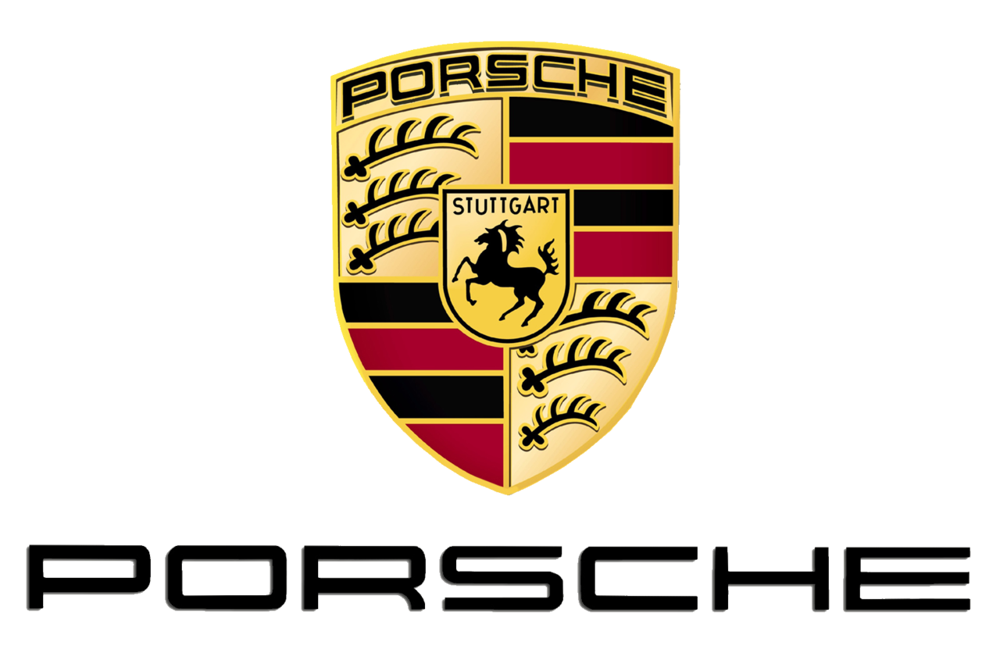
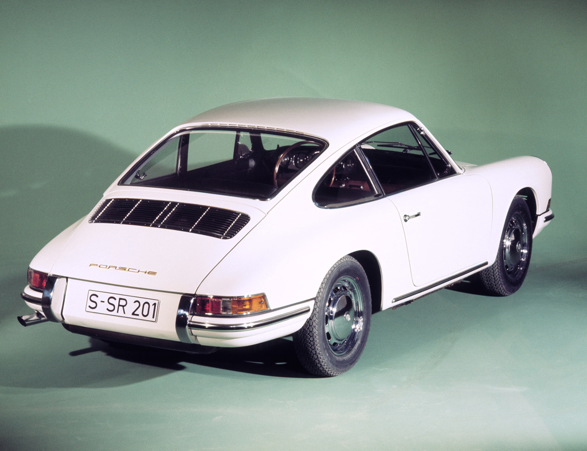
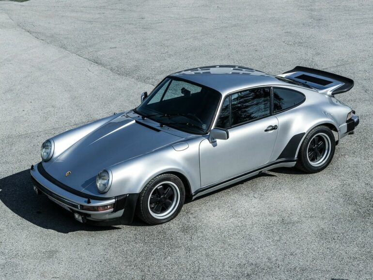
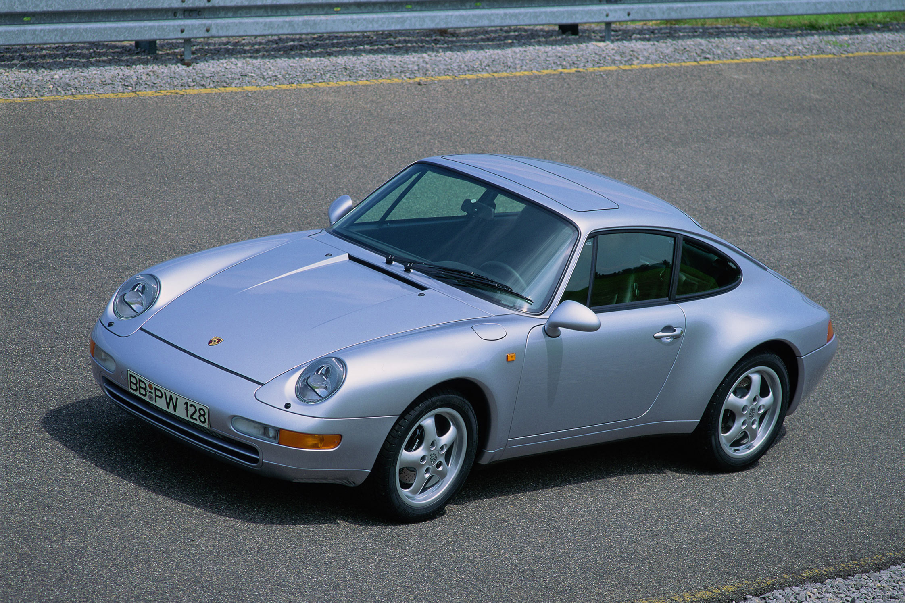
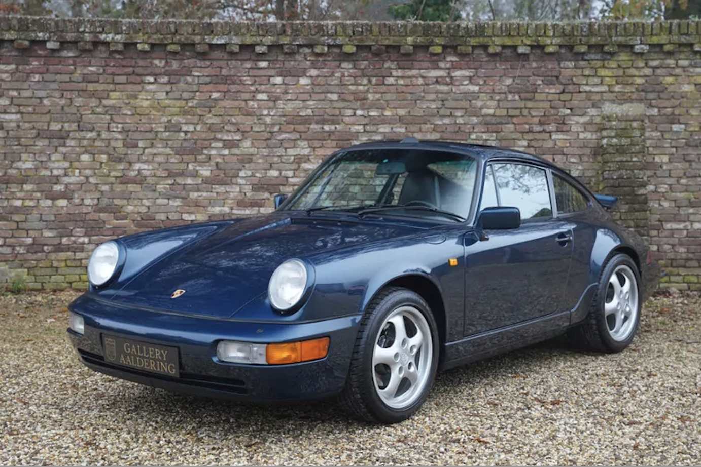
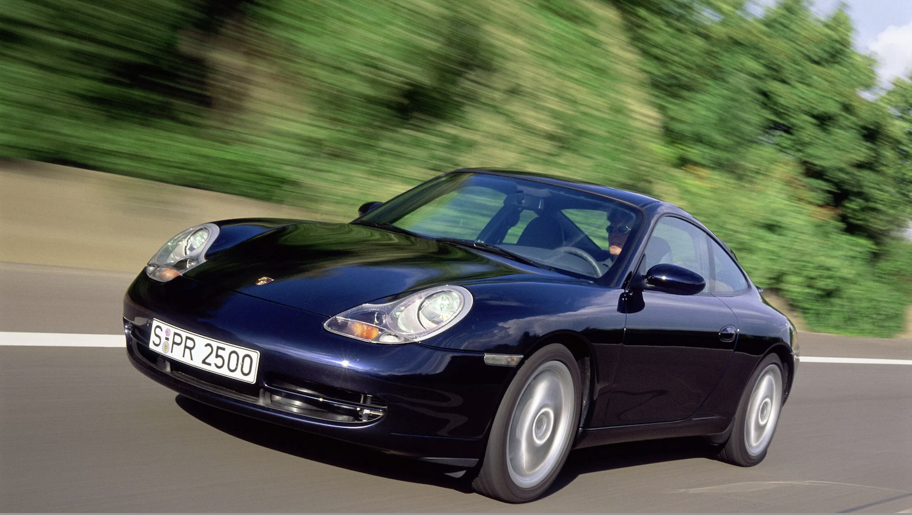
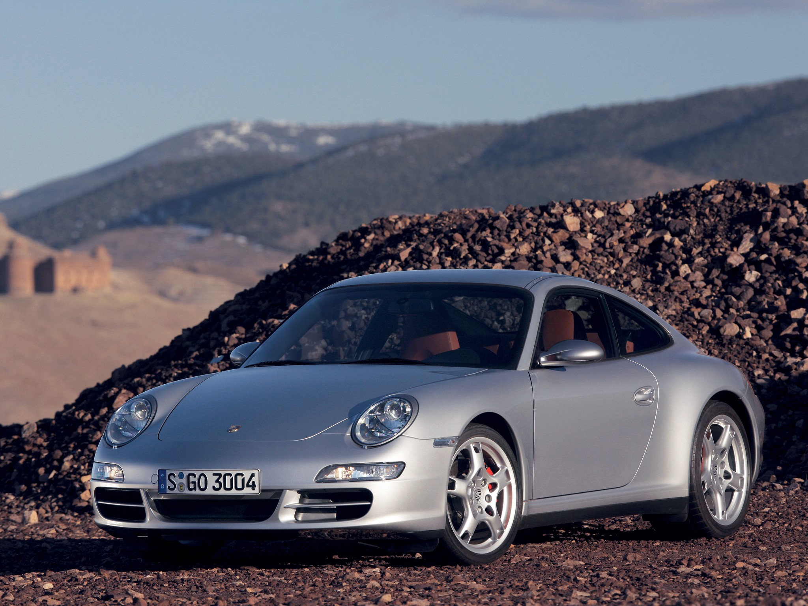
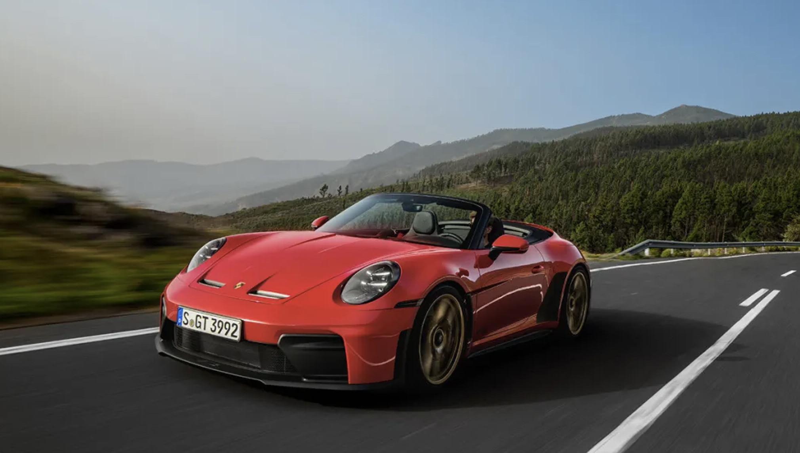

The Porsche 911 was designed in the early 1960s by Butzi Porsche, grandson of the company's
founder, as a replacement for their aging previous model. It debuted at the 1963 Frankfurt Motor
Show under the name "901," but French automaker Peugeot already owned the rights to car names
with a zero in the middle, so Porsche quietly swapped it to "911" before sales began in 1964.
The name stuck, and so did the car.
A few things made the original car revolutionary for its time:

The 911 lasted because Porsche found a formula that worked and refused to abandon it, a compact, stylish sports car with the engine in the back, delivering a driving experience unlike anything else on the road. Rather than replacing it entirely every decade, Porsche treated each new version as a refinement: more power, better technology, safer handling, but always recognizably a 911.

1963 - 1973: The Original 911
Debuted at the 1963 Frankfurt Motor Show as the 901 before being renamed.

1973 - 1989: The G-Series
The first major redesign, adding new bumpers to meet US safety laws while growing the engine from 2.7 to 3.2 liters.

1989 - 1993: The 964
Introduced the first all-wheel drive 911, ABS brakes, and an optional automatic transmission — the 911's first steps into the modern era.

1993 - 1998: The 993
The last air-cooled 911, and the most collectible. A big visual redesign, improved handling, and a twin-turbocharged variant producing 408 hp.

1997 - 2005: The 996
A controversial but necessary shift to water-cooled engines to meet emissions rules. The "fried egg" headlights divided opinion, but it sold better than any previous 911.

2005 - 2012: The 997
Brought back the classic round headlights and introduced the PDK dual-clutch gearbox, which was faster than any manual transmission.

2011 - 2019: The 991
Built on an entirely new platform with a longer wheelbase. Electric steering replaced hydraulic, and turbos were eventually added across the whole Carrera range.